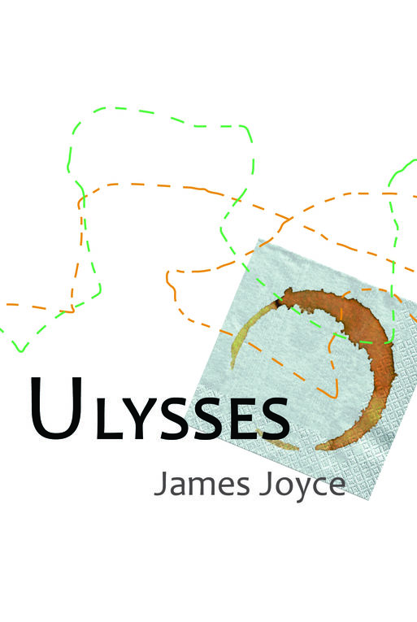
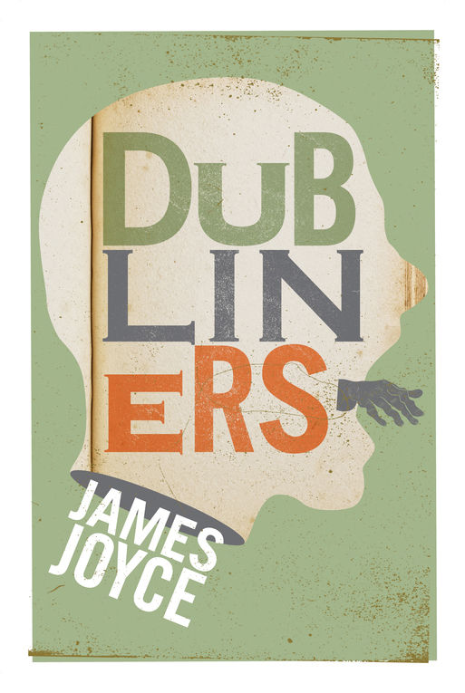
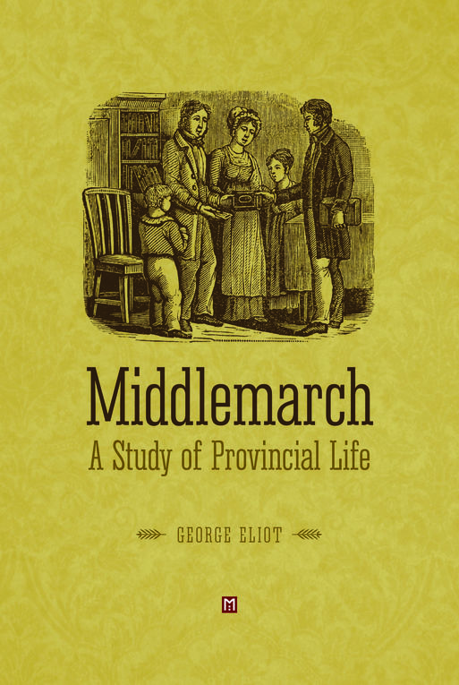

Texts
Text / Feature Matrix
For more features, please see the issues pages for the individual texts.
| Text | Ulysses | Portrait of the Artist | Dubliners | Finnegans Wake | Middlemarch |
|---|---|---|---|---|---|
| Author | Joyce | Joyce | Joyce | Joyce | Eliot |
| Line Nos. | DONE | DONE | DONE | DONE | TODO |
| Dialogue Attribution | DONE | INPROGRESS | DONE | TODO | DONE |
| Place Names | DONE | DONE | DONE | TODO | TODO |
| Geotagging | TODO | DONE | DONE | TODO | TODO |
| Distinctive Words | INPROGRESS | INPROGRESS | TODO | WONTFIX | TODO |
| Cross-References | INPROGRESS | INPROGRESS | TODO | TODO | TODO |
| Languages | DONE | DONE | TODO | WONTFIX | TODO |
| Free Indirect Discourse | TODO | TODO | TODO | TODO | DONE |
| Criticism Mapping | TODO | TODO | TODO | TODO | TODO |
| Zenodo Archive | DONE | DONE | TODO | TODO | TODO |
A Portrait of the Artist as a Young Man
The oldest of our texts, this has seen the most contributions. Based on the critical edition prepared by Hans Walter Gabler.
Ulysses

Based on Ulysses: A Critical and Synoptic Edition (1984 [rev. 1986]) prepared by Hans Walter Gabler with Wolfhard Steppe and Claus Melchior.
Dubliners
Based on the Gabler edition.

Finnegans Wake
Based on this TEI edition, and cross-checked with corrections from the Faber 1975 edition.
Middlemarch

Originally part of Michelle Qiu’s senior thesis project at Columbia University. Text based on the Project Gutenberg HTML edition. Dialogue attribution, epigraphs, chapters, and free indirect discourse are marked up.
Associated Projects
The Joyce Word Dictionary aggregates data about Joycean coinages and neologisms. Currenly a separate project, it will soon be integrated into Open Editions.